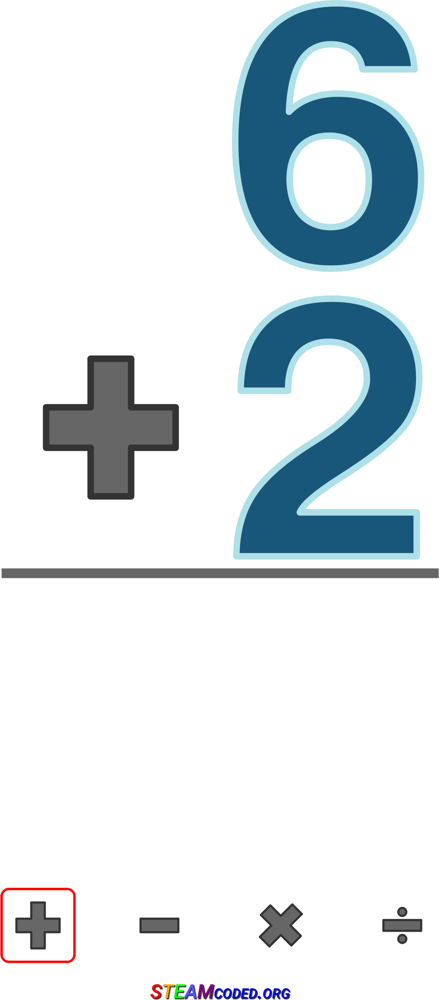

| 1 2 3 4 5 6 7 8 9 10 11 12 13 14 15 16 17 18 19 20 21 22 23 24 25 26 27 28 29 30 31 32 33 34 35 36 37 38 39 40 41 42 43 44 45 46 47 48 |
| 16:51:39 | BUG |  A lot is not in order. For starters the mills go too fast |
| 16:48:01 | TEST |  Of course, a test will have to confirm this... :-/ |
| 16:47:45 | SCRIPT |  And the blads of the mills should turn now.... |
| 16:47:16 | ENHANCEMENT |  OnCycle support |
| 16:40:54 | CONFIRMED |  THAT WORKS! |
| 16:38:13 | DONE |  All mills will go into a random angle... They will not yet turn though |
| 16:23:41 | CONFIRMED | Yup, now everything is in order |
| 16:20:46 | FIXED |  I think I fixed that issue, but a test will have to show this |
| 16:20:14 | FIXED | And a nil value out of the way |
| 16:20:08 | JUDGMENT |  NOT fixed.... The stuff itself is not properly executed, but at least the fix itself is fixed |
| 16:16:50 | FIXED | Fixed????? |
| 15:58:23 | TEST | Again! |
| 15:58:18 | STUPIDITY |  Forgot to save... DOH! |
| 15:34:27 | BUG |  It doesn't work.... WHY? |
| 15:31:56 | TEST | Testing |
| 15:31:47 | DEBUG |  I need to see if this works the way it's intended |
| 15:25:04 | LICENSE |  Up-to-date |
| 15:20:42 | ENHANCEMENT | An iteration routine listing out ALL objects in a Kthura map regardless of the layer the objects are in |
| 15:11:40 | MAP |  Windmill start up area... Just a silly routine :P |
| 15:09:25 | UPDATED |  #2 #2 (Fishing pole was not yet scratched off... silly me). |
| 15:08:20 | GITHUB |  Turned #76 in a checklist |
| 15:04:48 | SOLVED |  THAT was indeed the issue! |
| 15:02:40 | TECHNO |  (I think that the lack of actual barriers, might be causing this to happen) :-/ |
| 15:02:14 | MAP | A few exit zones set up |
| 15:00:23 | ANALYSIS |  The log however did even show the debug error check was not even called. Apparently things already went wrong while Kthura was loading all this.... |
| 14:59:08 | ANALYSIS | Since the error didn't "spring" I suppose, there's more wrong here... |
| 14:54:58 | FIXED | It goes without saying that's been fixed now |
| 14:54:48 | STUPIDITY | CODE TYPO.... Oh MAN!!! |
| 14:52:59 | UPDATED | #17 I've discovered more details on this, and encountered the problem on more than just the graves, although the graves are the most prominent things you can see this on. |
| 14:50:13 | TEST | Let's test that ;) |
| 14:49:38 | DEBUG | Proper error catching. Game should still crash, but if the crash is cause by what I think it is caused, this error will show the proper error. Also handy for the future. |
| 14:44:42 | LUA |  IDE refresh |
| 14:40:16 | BUG | Crash! I expected this, and I need to find out what i can do about that |
| 14:37:36 | TEST | For now all I will do is try to see if the city loads at all.... A bit of a routine check |
| 14:28:56 | FIXED | Data Correction |
| 14:28:37 | MAP | I've set up the map with the starting point and two mill blade spots |
| 14:26:21 | FIXED | Several Fixups Kthura had to deal with |
| 14:20:03 | CONFIG |  Hotspot config |
| - = 30 Apr 2018 = - |
| 20:09:50 | PHANTASAR |  Oh yeah, my book also needs extra work, and that really should take priority above all else.... |
| 20:08:06 | GO |  I've also released the Game Jolt API for Go in the meantime. Work on that will not be that hard from this point on |
| 20:06:42 | PASCAL |  This does (of course) not yet end ASCII man, but that will happen eventually. |
| 20:06:24 | GO | In the meantime I brought "Who is the Virus?" to a bit of a finish. A few enhancements, but that's it. |
| 20:03:34 | ART |  However I can resume stuff again, although I had little time today, but I did vanes of the windmills. After all Windville is a bit of a pun to Wyndia, so Windmills must be all over the place |
| 20:01:36 | STATUS |  I had a few projects in between to take care off, forcing me to bring this game to a temporary standstill |
| - = 27 Apr 2018 = - |
| 19:00:10 | STATUS | See ya later ... :-/ |
| 18:59:13 | ALPHA |  Updated |
| 18:54:19 | GITHUB | Code pushed |
| 18:50:56 | BACKUP |  done |
| 18:49:27 | NOTE | |
| 18:48:48 | STATUS | Well, with a littlebit of luck, I will be able to start on Windville tomorrow. I've always hated towns, and Windville is likely to be one of the biggest towns, and also one of the most complex towns for me to set up. Due to the parody setup of this game, I guess it comes to no surprise I'll have to fill the entire town with windmills, and those things are gonna be quite a challenge. And this will of course also be the place where Ryanna will meet prince Nino. Although Nino will not immediately join the party upon arrival, this is gonna be a rather tricky thing to do properly from the start. You can count on it that Windville will get me stuck on one location for a long time. Of course, once this place is done, I can really get to work on progress in the rest of the game. There's still a lot to do This is also the moment that alpha testers are allowed to join in on me. I'm not expecting much of them, since there were never much in the first place, but who wants to join can soon do so. |
| 16:47:36 | FIXED | Duplicate identifier declaration |
| 16:46:15 | FIXED | Unneeded / |
| 16:45:28 | FIXED | Forgotten .png |
| 16:43:46 | ENHANCEMENT | "Now Loading" should appear in the main menu when clicking "Contine a game"... |
| 16:28:59 | LINK |  Linked into the game by the init script, so any part of the game can immediately access it, and also to make sure no extra load time is required to load the banner as this screen was meant to void all kinds of confusion and that effect would be voided, with that extra loading time, wouldn't it? |
| 16:27:31 | SCRIPT | A routine that loads the banner and shows it when asked |
| 16:20:10 | ART | |
| 16:07:32 | NOTE |  Please note, trying to enter Windville will (for the time being) crash the game. |
| 16:07:13 | STATUS | Okay, that is all in order now |
| 16:03:29 | FIXED | Icon fix for towns |
| 15:58:21 | FIXED | And fixed it |
| 15:58:17 | SOLVED | I think I found out why |
| 15:57:54 | BUG | For some reason Windville won't unlock |
| 15:56:40 | MUSIC |   I've chosen "Derest City" by Kevin McLeod for the town where Shirley comes from. |
| 15:50:13 | FIXED | Stat reference error |
| 15:47:39 | FIXED | Blockmap issue in area 005 of Beaufort Forest |
| 15:47:05 | JCR6 |  Rebuilding music file |
| 15:46:44 | MUSIC | "Vivacity" by Kevin McLeod will be played while you are in Windville |
| 15:39:00 | TEST | Time to test if this linkup fully works the way it should |
| 15:18:42 | LINK | And chain to the world map |
| 15:18:35 | SCRIPT | This will also unlock Windville |
| 15:18:22 | SCRIPT | Completing the dungeon will get Ryanna 120 exp in the easy mode, 60 in the casual mode and 30 in the hard mode |
| 15:16:08 | LINK | Worldmap unlock linker code present |
| 15:02:26 | WORLDMAP |  WindVille |
| 15:00:04 | MAP | Created an empty map for Windville, the first town Ryanna will pass through on her quest. I'll design the town itself later, for now this empty map file is needed as a hub my WorldMap database can link to :) |
| 14:57:30 | MAP | Area 005, which is the final area of this forest |
| 14:57:12 | ITEM |  Flare |
| 14:53:24 | CLEANUP |  MyData has automatically cleaned up some data that could no longer be processed due to the non-existence of a certain field (it was removed because this game doesn't need it). |
| 14:39:43 | CLOSED |  So we can close that part of the engine... YAY! |
| 14:39:32 | VERIFIED |  And after saving again after loading a game with links, the links remain in order |
| 14:39:06 | VERIFIED | No crashing upon loading |
| 14:36:43 | TEST | I now need to make sure loading will work out fine.... |
| 14:13:51 | VERIFIED | My RPG viewer detects all linkups perfectly, which is a very good sign :) |
| 14:11:42 | FIXED | AT LAST! |
| 14:07:03 | TEST | Let's test it noooow.... |
| 14:04:21 | BUG | |
| 13:55:04 | GITHUB | |
| 13:48:48 | LAZY |  Should be fixed |
| 13:34:07 | TODO | |
| 13:31:45 | BUG | The RPG library appears to have trouble saving linkups... Most likely a casing error |
| 13:31:25 | CONFIRMED | the cutscene works |
| 13:25:28 | TEST | Take Three |
| 13:24:48 | FIXED | Layer/spawnspot referrence error |
| 13:20:11 | TEST | Take Two |
| 13:19:46 | FIXED | Entry misnaming error |
| 13:18:46 | BUG | Crash on scenario reference |
| 13:18:36 | TEST | Take one |
| 13:10:59 | STATUS | Right, the time has come to test everything out... |
| 12:55:03 | LINK | Link back to the forest in order to make the player able to resume the game. |
| 12:54:26 | MAP | Resume spot in forest |
| 12:50:42 | NOTE | The sprites of the people in this scene are not yet present.... |
| 12:50:22 | SCRIPT | Scenario should run |
| 12:48:33 | JCR6 | Rebuilding music files |
| 12:48:08 | CONFIG | Configured music building script |
| 12:37:00 | SCRIPT | Music Scripts set up |
| 12:33:29 | MUSIC | "Comfortable Mystery" by Kevin McLeod will be played during the cutscene |
| 12:26:03 | STUDY |  I need to see how my music builder script was set up... Yeah mind me, it was a while ago, ok? |
| 12:06:28 | SCRIPT | Skeleton for Blue Palace |
| 12:00:13 | LINK | Link to cut-scene map. As you can guess this is a part of a dungeon were Ryanna will eventually get later in the game |
| 11:41:52 | FIXED | Minor fixups |
| 11:36:03 | ENHANCEMENT | Added the possibility to immediately spawn the player while loading a map |
| - = 26 Apr 2018 = - |
| 00:30:42 | BACKUP | Run.... You'd think with that little work, does it matter? Well I've dealt with tons of data elsewhere, ya know |
| - = 25 Apr 2018 = - |
| 17:04:35 | SCENARIO |  Adaptions |
| 16:29:21 | ART |  Drawn a portrait which I will not publicly show in this devlog, for obvious reasons, trust me... You'll understand once you say it in game... |
| 16:28:41 | PHANTASAR | And that also went on |
| 16:28:15 | GO | Set up the current version of "Who is the Virus?" |
| - = 21 Apr 2018 = - |
| 19:17:39 | STATUS | Well, and that brings us up-to-date, I think |
| 19:17:06 | GITHUB | Repository updated |
| 19:16:12 | LOVE2D |  Forum Devlog update |
| 19:13:17 | GAMEJOLT |  Devlog update |
| 19:08:54 | ALPHA | Updated |
| 18:48:33 | BACKUP | The daily backup has begun |
| 18:46:50 | DEBUG | Anna's debug tag turned off... AGAIN! |
| 17:52:52 | FIXED | Time of achievement is now properly put in the log |
| 17:51:08 | FIXED | #100 -- but a little subbug came to light |
| 17:46:52 | TEST | Take XIV |
| 17:46:43 | EXPERIMENT |  I hope this fixes #100 |
| 17:43:27 | SCREENSHOT | |
| 17:39:30 | TEST | Take XIII for more details from Anna |
| 17:39:19 | DEBUG | This can't be |
| 17:37:22 | ANALYSIS | According to the log Anna has succesfully processed the request... Why does the site tell differently? |
| 17:30:51 | DEBUG | Extra line to figure out #100 |
| 17:27:14 | FAILURE |  Why does Mac often produce a black picture when taking screenshots fullscreen? |
| 17:21:34 | TEST | Take XII |
| 17:21:30 | FIXED | Code typo |
| 17:18:56 | TEST | Take XI |
| 17:18:50 | FIXED | Y coordinate issue achievement announcements |
| 17:18:23 | DEBUG | Extra line for me to eliminate a few impossibilities about #100 before I actually go fixing it |
| 17:16:01 | BUG | |
| 17:10:38 | DEBUG | But I need to figure out why it doesn't show, though.... |
| 17:09:02 | BUG | for some reason the achievement line doesn't show, but the error popping up, at least proves the required routine's been called... |
| 17:04:28 | FIXED | As a result that issue SHOULD be fixed... But we'll see if that's true or not... :-/ |
| 17:04:08 | TECHNO | Well Anna basically doesn't need it... Anna can only send a warning in case you'd be playing an outdated version, but that is not really as issue in this game as it doesn't use the really complicated parts of Anna. |
| 17:03:31 | REMOVED |  I've removed the mkl reference as I decided not to use it... yet.... |
| 17:01:16 | TEST | That is the result of take X |
| 17:01:09 | BUG | The link to Anna however did not |
| 17:00:56 | CONFIRMED | The link to Game Jolt WORKS!!!! |
| 16:56:46 | FIXED | I think I fixed this |
| 16:52:47 | DEBUG | I've added an extra line in order to find out how the fuck the nil can happen |
| 16:42:48 | BUG | "attempt to concatenate local 'trophy_id' (a nil value)" ???? Not a chance in hell.... Now why does that happen? |
| 16:42:00 | BUG | The game crashses though when the achievement should be given, and I wonder why |
| 16:29:10 | CONFIRMED | No more bugs from Anna, and the login appears to be working... YAY! |
| 16:26:09 | TEST | Take IX |
| 16:26:02 | DONE | Some extra settings set right |
| 16:14:53 | DEBUG | debugmode for Anna turned off |
| 16:07:55 | CONFIRMED | AND NOW THE SERVER SIDE CODE WORKS |
| 16:06:01 | TEST | Take VIII |
| 16:00:29 | FIXED | Removed one line that was no longer needed, and that fixes this issue (bad query) in the process. |
| 15:57:16 | COCKROACH |  Database failure!!!! (on the Anna server) Oh crap! |
| 15:53:59 | TEST | Take VII (and then to think I haven't yet come to the achievements themselves what these tests are all about). |
| 15:53:35 | FIXED | A server side parse error |
| 15:52:43 | ANNA |  Now I deliberaly allowed Anna to ban me just to see if everything works, and it appears, it does not work entirely... |
| 15:51:37 | TEST | Take VI |
| 15:51:28 | FIXED | cosmetic debug fix |
| 15:48:53 | ANNA | Bans are now easier for me to trace... That is the bans placed by Anna.... |
| 15:44:34 | ANNA | And some secret data is now handled differently, and that's all you need to know :P |
| 15:41:59 | ANNA | Date of posts Anna puts to people's accounts is now visible. I need to note, the date wasn't even stored before. All older messages will be set to June 19th, 1975, which is my own date of birth. :P |
| 15:28:34 | COSMETIC |  More proper way to respond |
| 15:26:57 | TEST | Take V |
| 15:26:52 | ANNA | Oh yeah, I got to push the server side code first before I start the test, doh! |
| 15:25:49 | DEBUG | It's not a real issue now as I can now test if the game works properly with a banned Anna account (because the game itself should still be playable except for throwing a warning). |
| 15:25:12 | ANNA | Alright, I see Anna banned me, and the reason is why she did so is properly logged.... This is because the database Anna uses missed some data, so she acted the way she should on that one. |
| 15:22:10 | FIXED | Well that issue's been fixed, but there is something else in the data I don't like... |
| 15:20:16 | ANALYSIS | Well the data Anna now provided me leaves no mistake about it... A server side bug.... Let's dig into the server side code of Anna then |
| 15:17:47 | DEBUG | Anna will now dump out everything that is normally secret, but this way I can try to find out what is happening here |
| 15:12:22 | ANALYSIS | It appears this is an internal error... The error indicates the data Anna sends is not properly retrieved... This could be a server side bug |
| 15:11:32 | SITE |  Added tag ANALYSIS |
| 15:09:00 | TEST | Take IV |
| 15:08:55 | DEBUG | Now THIS may provide some answers... I hope! |
| 15:05:10 | TEST | Take III is now run in a special test setup so i can see what Anna actually reports back |
| 15:00:28 | UNIX |  A bit of data transfers |
| 14:55:08 | PROBLEM | Still no good? |
| 14:53:57 | TEST | Not a single line of code changed, and yet I already go to TAKE II |
| 14:53:44 | FIXED | I hope.... |
| 14:50:11 | STATUS | Well now I have to start this setup all over.... :-/ |
| 14:47:13 | SOLVED | It appears to be a typo in my credentials (doh!) |
| 14:37:11 | PROBLEM | Anna doesn't accept my login.
I'm not sure if this is a bug or if my credentials are not in order, so I need to find out. |
| 14:36:47 | SITE | Added tag PROBLEM |
| 14:34:08 | TEST | Everybody! Get ready for TAKE I! |
| 14:33:55 | ANNA | Right, that Anna stuff has been set right now.... |
| 14:30:10 | FIXED | As well as a mixed up issue I also found |
| 14:30:00 | FIXED | That's been fixed |
| 14:29:35 | BUG | A bug in the debugging system.... Irony, eh? |
| 14:19:12 | NOTE | Before I can start testing I gotta set some stuff right, as a few things concerning Anna have not yet been properly taken care of, and that needs to be done first! |
| 13:59:22 | DEBUG | Variable manipulation for console usage |
| 13:53:22 | STATUS | Well that's sets that part in order.... The feature to actually VIEW the achievements you scored will have to wait, also due to the cutscene that is not yet finished, stuff is hard to test here... (unless I "brick" things).... |
| 13:50:00 | TODO | |
| 13:48:24 | LINK | Used to linkup with main routine, making sure achievements always show... At least during normal flowthroughs, as some events, like textboxes and spell animates can 'interrupt' this, only to resume after... |
| 13:46:12 | ENHANCEMENT | Extra features on draw callback killer |
| 13:40:05 | DONE | ScrollThrough show routine |
| 1 2 3 4 5 6 7 8 9 10 11 12 13 14 15 16 17 18 19 20 21 22 23 24 25 26 27 28 29 30 31 32 33 34 35 36 37 38 39 40 41 42 43 44 45 46 47 48 |